NCERT Solutions for Class 11 Physics Chapter 5 Laws of motion are part of Class 11 Physics NCERT Solutions. Here we have given NCERT Solutions for Class 11 Physics Chapter 5 Laws of motion.
NCERT Solutions for Class 11 Physics Chapter 5 Laws of motion
Topics and Subtopics in NCERT Solutions for Class 11 Physics Chapter 5 Laws of motion:
| Section Name | Topic Name |
| 5 | Laws of motion |
| 5.1 | Introduction |
| 5.2 | Aristotle’s fallacy |
| 5.3 | The law of inertia |
| 5.4 | Newton’s first law of motion |
| 5.5 | Newton’s second law of motion |
| 5.6 | Newton’s third law of motion |
| 5.7 | Conservation of momentum |
| 5.8 | Equilibrium of a particle |
| 5.9 | Common forces in mechanics |
| 5.10 | Circular motion |
| 5.11 | Solving problems in mechanics |
QUESTIONS FROM TEXTBOOK
Question 5. 1. Give the magnitude and direction of the net force acting on
(a) a drop of rain falling down with a constant speed,
(b) a cork of mass 10 g floating on water,
(c) a kite skilfully held stationary in the sky,
(d) a car moving with a constant velocity of 30 km/h on a rough road,
(e) a high-speed electron in space far from all material objects, and free of electric and magnetic fields.
Answer: (a) As the drop of rain is falling with constant speed, in accordance with first law of motion, the net force on the drop of rain is zero.
(b) As the cork is floating on water, its weight is being balanced by the upthrust (equal to.weight of water displaced). Hence net force on the cork is zero.
(c) Net force on a kite skilfully held stationary in sky is zero because it is at rest.
(d) Since car is moving with a constant velocity, the net force on the car is zero.
(e) Since electron is far away from all material agencies producing electromagnetic and gravitational forces, the net force on electron is zero.
Question 5. 2. A pebble of mass 0.05 kg is thrown vertically upwards. Give the direction and magnitude of the net force on the pebble,
(a) during its upward motion, .
(b) during its downward motion,
(c) at the highest point where it is momentarily at rest. Do your answers change if the pebble was thrown at an angle of 45° with the horizontal direction 1 Ignore air resistance.
Answer: (a) When the pebble is moving upward, the acceleration g is acting downward, so the force is acting downward is equal to F = mg = 0.05 kg x 10 ms-2 = 0.5 N.
(b) In this case also F = mg = 0.05 x 10 = 0.5 N. (downwards).
(c) The pebble is not at rest at highest point but has horizontal component of velocity. The direction and magnitude of the net force on the pebble will not alter even if it is thrown at 45° because no other acceleration except ‘g’ is acting on pebble.
More Resources for CBSE Class 11
- NCERT Solutions
- NCERT Solutions Class 11 Maths
- NCERT Solutions Class 11 Physics
- NCERT Solutions Class 11 Chemistry
- NCERT Solutions Class 11 Biology
- NCERT Solutions Class 11 Hindi
- NCERT Solutions Class 11 English
- NCERT Solutions Class 11 Business Studies
- NCERT Solutions Class 11 Accountancy
- NCERT Solutions Class 11 Psychology
- NCERT Solutions Class 11 Entrepreneurship
- NCERT Solutions Class 11 Indian Economic Development
- NCERT Solutions Class 11 Computer Science
Question 5. 3. Give the magnitude and direction of the net force acting on a stone of mass 0.1 kg,
(a) just after it is dropped from the window of a stationary train,
(b) just after it is dropped from the window of a train running at a constant velocity of 36 km/ h,
(c) just after it is dropped from the window of a train accelerating with 1 ms-2,
(d) lying on the floor of a train which is accelerating with 1 m s~2, the stone being at rest relative to the train.Neglect air resistance throughout.
Answer: (a) Mass of stone = 0.1 kg
Net force, F = mg = 0.1 x 10 = 1.0 N. (vertically downwards).
(b) When the train is running at a constant velocity, its acceleration is zero. No force acts on the stone due to this motion. Therefore, the force on the stone is the same (1.0 N.).
(c) The stone will experience an additional force F’ (along horizontal) i.e.,F = ma = 0.1 x l = 0.1 N
As the stone is dropped, the force F’ no longer acts and the net force acting on the stone F = mg = 0.1 x 10 = 1.0 N. (vertically downwards).
(d) As the stone is lying on the floor of the train, its acceleration is same as that of the train.
.•. force acting on the stone, F = ma = 0.1 x 1 = 0.1 N.
It acts along the direction of motion of the train.
Question 5. 4. One end of a string of length l is connected to a particle of mass m and the other to a small peg on a smooth horizontal table. If the particle moves in a circle with speed v the net force on the particle (directed towards the centre) is:
(i) T, (ii) T – mv2/l, (iii) T +mv2/l, (iv) 0
T is the tension in the string. [Choose the correct alternative].
Answer: (i) T
The net force T on the particle is directed towards the centre. It provides the centripetal force required by the particle to move along a circle.
Question 5. 5. A constant retarding force of 50 N is applied to a body of mass 20 kg moving initially with a speed of 15 ms-3. How long does the body take to stop?
Answer: Here m = 20 kg, F = – 50 N (retardation force)
As F = ma
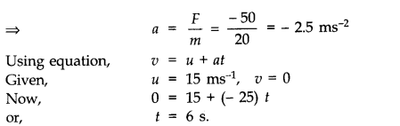
Question 5. 6. A constant force acting on a body of mass 3.0 kg changes its speed from 2.0 ms-1 to 3.5 ms-1 in 25 s. The direction of the motion of the body remains unchanged. What is the magnitude and direction of the force?
Answer:
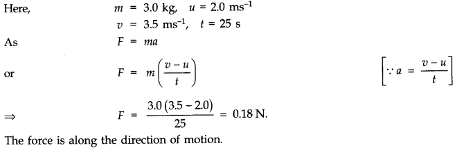
Question 5. 7. A body of mass 5 kg is acted upon by two perpendicular forces 8 N and 6 N. Give the magnitude and direction of the acceleration of the body.
Answer:

Question 5. 8. The driver of a three-wheeler moving with a speed of 36 km/h sees a child standing in the middle of the road and brings his vehicle to rest in 4.0 s just in time to save the child. What is the average retarding force on the vehicle? The mass of the three-wheeler is 400 kg and the mass of the driver is 65 kg.
Answer: Here mass of three-wheeler mi = 400 kg, mass of driver = m2 = 65 kg, initial speed of auto,
u = 36 km/h = 36 x — m/s 10 ms-1, final speed, v – 0 and t = 4s.
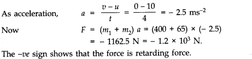
Question 5. 9. A rocket with a lift-off mass 20,000 kg is blasted upwards with an initial acceleration of 5.0 ms-2. Calculate the initial thrust (force) of the blast.
Answer: Here, m = 20000 kg = 2 x 104 kg
Initial acceleration = 5 ms-2
Clearly, the thrust should be such that it overcomes the force of gravity besides giving it an upward acceleration of 5 ms-2.
Thus the force should produce a net acceleration of 9.8 + 5.0 = 14.8 ms-2.
Since, thrust = force = mass x acceleration
F = 2 x 104 x 14.8 = 2.96 x 105 N.
Question 5. 10. A body of mass 0.40 kg moving initially with a constant speed of 10 ms-1 to the north is subject to a constant force of 8.0 N directed towards the south for 30 s. Take the instant the force is applied to be t = 0, the position of the body at that time to be x = 0, and predict its position at t = -5 s, 25 s, 100 s.
Answer:
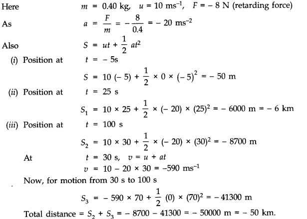
Question 5. 11. A truck starts from rest and accelerates uniformly at 2.0 ms-2. At t = 10 s, a stone is dropped by a person standing on the top of the truck (6 m high from the ground). What are the (a) velocity, and (b) acceleration of the stone at t = 11s? (Neglect air resistance.)
Answer: u = 0, a = 2 ms-2, t 10 s
Using equation, v = u + at, we get
v = 0 + 2 x 10 = 20 ms-1
(a) Let us first consider horizontal motion. The only force acting on the stone is force of gravity which acts vertically downwards.
Its horizontal component is zero. Moreover, air resistance is to be neglected. So, horizontal motion is uniform motion.
.-. vx = v = 20 ms-1
Let us now consider vertical motion which is controlled by force of gravity.
u=0, a = g = 10 ms-2, t = (11 — 10) s = 1 s
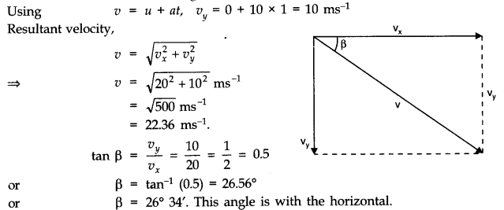
(b) The moment the stone is dropped from the car, horizontal force on the stone is zero. The only acceleration of the stone is that due to gravity. This gives a vertically downward acceleration of 10 ms-2. This is also the net acceleration of the stone.
Question 5. 12. A bob of mass 0.1 kg hung from the ceiling of a room by a string 2 m long is set into oscillation.
The speed of the bob at its mean position is 1 ms-1. What is the trajectory of the bob if the string is cut when the bob is (a) at one of its extreme positions, (b) at o its mean position ?
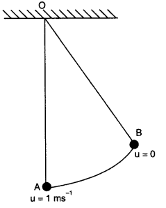
Answer: Let the bob be oscillating as shown in the figure.
(a) When the bob is at its extreme position (say B), then its velocity is zero. Hence on cutting the string the bob will fall vertically downward under the force of its weight F = mg.
(b) When the bob is at its mean position (say A), it has a horizontal velocity of v = 1 ms-1 and on cutting the string it will experience an acceleration a = g = 10 ms-2 in vertical downward direction. Consequently, the bob will behave like a projectile and will fall on ground after describing a parabolic path.
Question 5. 13. A man of mass 70 kg, stands on a weighing machine in a lift, which is moving
(a) upwards with a uniform speed of 10 ms-1.
(b) downwards with a uniform acceleration of 5 ms-2.
(c) upwards with a uniform acceleration of 5 ms-2.
What would be the readings on the scale in each case?
(d) What would be the reading if the lift mechanism failed and it hurtled down freely under gravity?
Answer: Here, m = 70 kg, g = 10 m/s2
The weighing machine in each case measures the reaction R i.e., the apparent weight.
(a) When the lift moves upwards with a uniform speed, its acceleration is zero.
R = mg = 70 x 10 = 700 N
(b) When the lift moves downwards with a = 5 ms-2
R = m (g – a) = 70 (10 – 5) = 350 N
(c) When the lift moves upwards with a = 5 ms-2
R = m (g + a) = 70 (10 + 5) = 1050 N
(d) If the lift were to come down freely under gravity, downward acc. a = g
:. R = m(g -a) = m(g-g) = Zero.
Question 5. 14. Figure shows the position-time graph of a particle of mass 4 kg. What is the (a) force on the particle for t < 0, t > 4 s, 0 < t < 4 s? (b) impulse at t = 0 and t = 4 s? (Consider one-dimensional motion only).
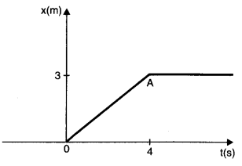
Answer:
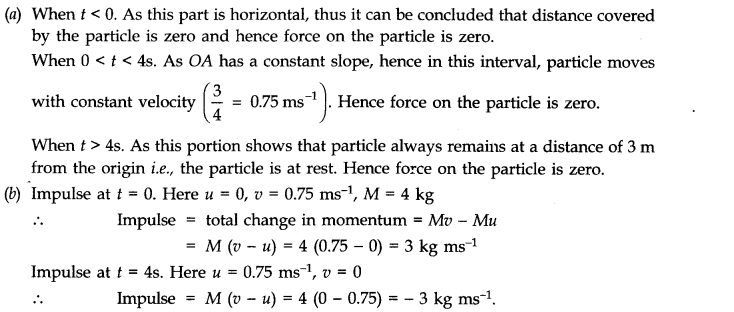
Question 5. 15. Two bodies of masses 10 kg and 20 kg respectively kept on a smooth, horizontal surface are tied to the ends of a tight string. A horizontal force F = 600 N is applied to (i) A, (ii) B along the direction of string. What is the tension in the string in each case?
Answer:
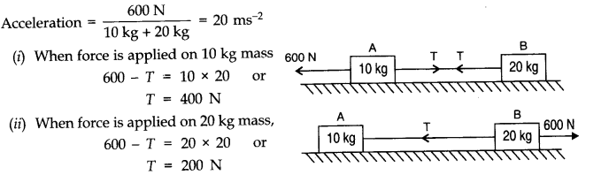
Question 5. 16. Two masses 8 kg and 12 kg are connected at the two ends of a light in extensible string that goes over a friction less pulley. Find the acceleration of the masses, and the tension in the string when the masses are released.
Answer:
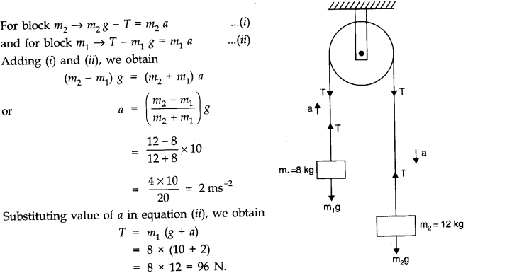
Question 5. 17. A nucleus is at rest in the laboratory frame of reference. Show that if it disintegrates into two smaller nuclei the products must move in opposite directions.
Answer: Let m1, m2 be the masses of products and v1,v2 be their respective velocities. Therefore, total linear momentum after disintegration = m1v1 +m2 v2. Before disintegration, the nucleus is at rest.
Therefore, its linear momentum before disintegration is zero.
According to the principle of conservation of linear momentum,
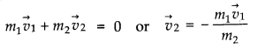
Negative sign shows that v1 and v2 are in opposite directions.
Question 5. 18. Two billiard balls, each of mass 0.05 kg, moving in opposite directions with speed 6 ms-1 collide and rebound with the same speed. What is the impulse imparted to each ball due to the other?
Answer: Initial momentum of each ball before collision
= 0.05 x 6 kg ms-1 = 0.3 kg ms-1
Final momentum of each ball after collision
= – 0.05 x 6 kg ms-1 = – 0.3 kg ms-1 Impulse imparted to each ball due to the other
= final momentum – initial momentum = 0.3 kg m s-1 – 0.3 kg ms-1
= – 0.6 kg ms-1 = 0.6 kg ms-1 (in magnitude)
The two impulses are opposite in direction.
Question 5. 19. A shell of mass 0.020 kg is fired by a gun of mass 100 kg. If the muzzle speed of the shell is 80 ms-1 what is the recoil speed of the gun?
Answer: m = 0.02 kg, M = 100 kg, v = 80 ms-1, V = ?
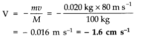
Negative sign indicates that the gun moves in a direction opposite to the direction of motion of the bullet.
Question 5. 20. A batsman deflects a ball by an angle of 45° without changing its initial speed which is equal to 54 km/h. What is the impulse imparted to the ball? (Mass of the ball is 0.15 kg.)
Answer:
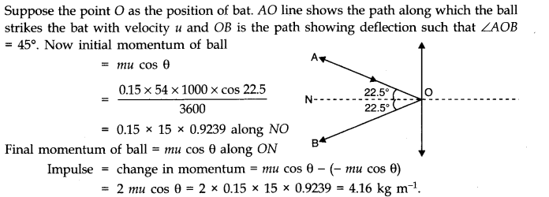
Question 5. 21. A stone of mass 0.25 kg tied to the end of a string is whirled round in a circle of radius 1.5 m with a speed of 40 rev./min in a horizontal plane. What is the tension in the string? What is the maximum speed with which the stone can be whirled around if the string can withstand a maximum tension of 200 N?
Answer:
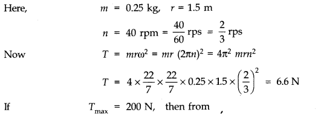
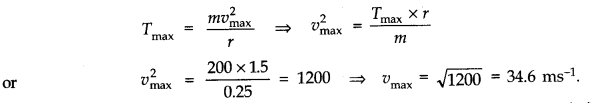
Question 5. 22. If, in Exercise 5.21, the speed of the stone is increased beyond the maximum permissible value, and the string breaks suddenly, which of the following correctly describes the trajectory of the stone after the string breaks:
(a) the stone moves radially outwards,
(b) the stone flies off tangentially from the instant the string breaks,
(c) the stoneflies off at an angle with the tangent whose magnitude depends on the speed of the particle?
Answer: (b) The velocity is tangential at each point of circular motion. At the time the string breaks, the particle continues to move in the tangential direction according to Newton’s first law of motion.
Question 5. 23. Explain why
(a) a horse cannot pull a cart and run in empty space,
(b) passengers are thrown forward from their seats when a speeding bus stops suddenly,
(c) it is easier to pull a lawn mower than to push it,
(d) a cricketer moves his hands backwards while holding a catch.
Answer: (a) A horse by itself cannot move in space due to law of inertia and so cannot pull a cart in space.
(b) The passengers in a speeding bus have inertia of motion. When the bus is suddenly stopped the passengers are thrown forward due to this inertia of motion.
(c) In the case of pull, the effective weight is reduced due to the vertical component of the pull. In the case of push, the vertical component increases the effective weight.
(d) The ball comes with large momentum after being hit by the batsman. When the player takes catch it causes large impulse on his palms which may hurt the cricketer. When he moves his hands backward the time of contact of ball and hand is increased so the force is reduced.
Question 5. 24. Figure shaws the position-time graph of a particle of mass 0.04 kg. Suggest a suitable physical context for this motion. What is the time between two consecutive impulses received by the particle ? What is the magnitude of each impulse?
Answer: This graph can be of a ball rebounding between two walls situated at position 0 cm and 2 cm. The ball is rebounding from one wall to another, time and again every 2 s with uniform velocity.
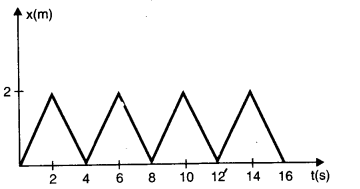
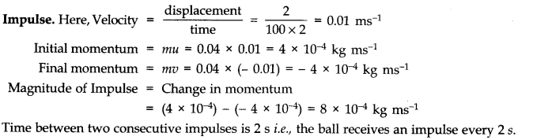
Question 5. 25. Figure shows a man standing stationary with respect to a horizontal conveyor belt that is accelerating with 1 ms-2. What is the net force on the man ? If the coefficient of static friction , between the man’s shoes and the belt is 0.2, up to what acceleration of the belt can the man continue to be stationary relative to the belt? (Mass of the man = 65 kg.)
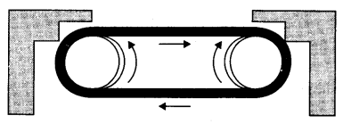
Answer: Here acceleration of conveyor belt a = 1 ms-2, μs= 0.2 and mass of man m = 65 kg. t As the man is in an accelerating frame, he experiences a pseudo force Fs = ma as shown
in fig. (a). Hence to maintain his equilibrium, he exerts a force F = – Fs = ma = 65 x 1 = 65 N in forward direction i.e., direction of motion of belt.
.’. Net force acting on man = 65 N (forward)
As shown in fig. (b), the man can continue to be stationary with respect to belt, if force of friction
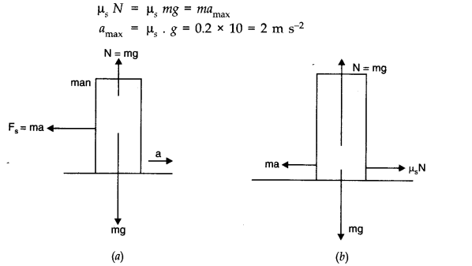
Question 5. 26. A stone of mass m tied to the end of a string is revolving in a vertical circle of radius R. The net force at the lowest and highest points of the circle directed vertically downwards are: (choose the correct alternative).
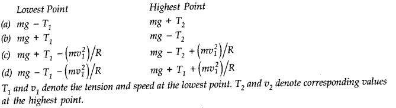
Answer: The net force at the lowest point is (mg – T1) and the net force at the highest point is (mg + T2). Therefore, alternative (a) is correct.
Since mg and T1 are in mutually opposite directions at lowest point and mg and T2 are in same direction at the highest point.
Question 5. 27. A helicopter of mass 1000 kg rises with a vertical acceleration of 15 ms-2. The crew and the passengers weigh 300 kg. Give the magnitude and direction of
(a) force on the floor by the crew and passengers,
(b) action of the rotor of the helicopter on surrounding air,
(c) force on the helicopter due to the surrounding air,
Answer: Here, mass of helicopter, m1= 1000 kg
Mass of the crew and passengers, m2 = 300 kg upward acceleration, a = 15 ms-2 and g = 10 ms-2
(a)Force on the floor of helicopter by the crew and passengers = apparent weight of crew and passengers
= m2 (g + a) = 300 (10 + 15) N = 7500 N
(b)Action of rotor of helicopter on surrounding air is obviously vertically downwards, because helicopter rises on account of reaction to this force. Thus, force of action
F = (m1+ m2) (g + a) = (1000 + 300) (10 + 15) = 1300 x 25 = 32500 N
(c)Force on the helicopter due to surrounding air is the reaction. As action and reaction are equal and opposite, therefore, force of reaction, F = 32500 N, vertically upwards.
5.28.A stream of water flowing horizontally with a speed of 15 ms-1 pushes out of a tube of cross sectional area 10-2 m2, and hits at a vertical wall nearby. What is the force exerted on the wall by the impact of water, assuming that it does not rebound?
Ans.In one second, the distance travelled is equal to the velocity v.
Volume of water hitting the wall per second, V = av where a is the cross-sectional area of the tube and v is the speed of water coming out of the tube.
V = 10-2 m2 x 15 ms-1 = 15 x 10-2 m3 s-1
Mass of water hitting the wall per second
= 15 x 10-2 x 103 kg s-1 = 150 kg s-1 [v density of water = 1000 kg m-3] Initial momentum of water hitting the wall per second
= 150 kg s-1 x 15 ms-1 = 2250 kg ms-2 or 2250 N Final momentum per second = 0 Force exerted by the wall = 0 – 2250 N = – 2250 N Force exerted on the wall = – (- 2250) N = 2250 N.
Question 5. 29. Ten one rupee coins are put on top of one another on a table. Each coin has a mass m kg. Give the magnitude and direction of
(a) the force on the 7th coin (counted from the bottom) due to all coins above it.
(b) the force on the 7th coin by the eighth coin and
(c) the reaction of the sixth coin on the seventh coin.
Answer: (a) The force on 7th coin is due to weight of the three coins lying above it. Therefore,
F = (3 m) kgf = (3 mg) N
where g is acceleration due to gravity. This force acts vertically downwards.
(b) The eighth coin is already under the weight of two coins above it and it has its own weight too. Hence force on 7th coin due to 8th coin is sum of the two forces i.e.
F = 2 m + m = (3 m) kg f = (3 mg) N The force acts vertically downwards.
(c) The sixth coin is under the weight of four coins above it.
Reaction, R = – F = – 4 m (kg) = – (4 mgf) N Minus sign indicates that the reaction acts vertically upwards, opposite to the weight.
Question 5. 30. An aircraft executes a horizontal loop at a speed of 720 km/h with its wings banked at 15°. What is the radius of the loop?
Answer:
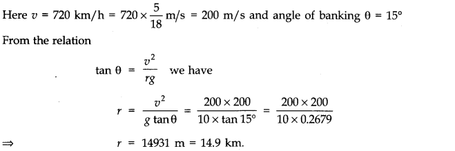
Question 5. 31. A train runs along an un banked circular track of radius 30 m at a speed of 54 km/h. The mass of the train is 106 kg. What provides the centripetal force required for this purpose the engine or the rails? What is the angle of banking required to prevent wearing out of the rail?
Answer:
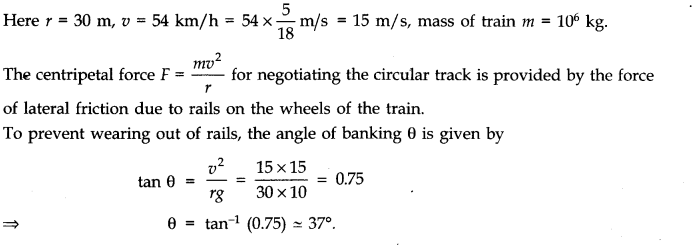
Question 5. 32. A block of mass 25 kg is raised by a 50 kg man in two different ways as shown in Fig. What is the action on the floor by the man in the two cases? If the floor yields to a normal force of 700 N, which mode should the man adopt to lift the block without the floor yielding?
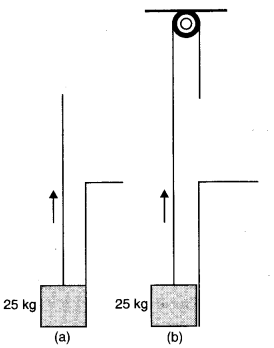
Answer: In 1st case, man applies an upward force of 25 kg wt.r (same as the weight of the block). According to Newton’s third law of motion, there will be a downward reaction on the floor.
The action on the floor by the man.
= 50 kg wt. + 25 kg wt. = 75 kg wt = 75 kg x 10 m/s2 = 750 N.
In case II, the man applies a downward force of 25 kg wt. According to Newton’s third law, the reaction is in the upward direction.
In this case, action on the floor by the man
= 50 kg wt – 25 kg wt. = 25 kg wt. = 25 kg x 10 m/s2 = 250 N.
Therefore, the man should adopt the second method.
Question 5. 33. A monkey of mass 40 kg climbs on a rope (Fig.) which can stand a maximum tension of 600 N. In which of the following cases will the rope break: the monkey
(a) climbs up with an acceleration of 6 ms-2
(b) climbs down with an acceleration of 4 ms-2
(c) climbs up with a uniform speed of 5 ms-1
(d) falls down the rope nearly freely under gravity?
(Ignore the mass of the rope).
Answer: (a) When the monkey climbs up with an acceleration a, then T – mg = ma
where T represents the tension (figure a).
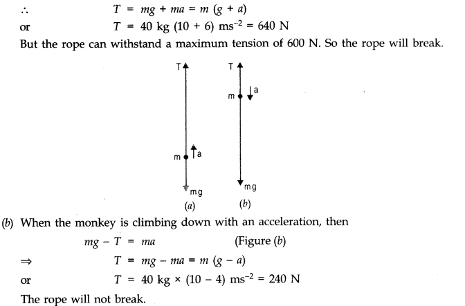
(c) When the monkey climbs up with uniform speed, then
T mg = 40 kg x 10 ms-2 = 400 N The rope will hot break.
(d) When the monkey is falling freely, it would be a state of weightlessness. So, tension will be zero and the rope will not break.
Question 5. 34. Two bodies A and B of masses 5 kg and 10 kg in contact with each other rest on a table against a rigid wall (Fig.). The coefficient of friction between the bodies and the table is 0.15. A force of 200 N is applied horizontally to A. What are (a) the reaction of the partition (b) the action-reaction forces between A and B? What happens when the wall is removed? Does the answer to (b) change, when the bodies are in motion? Ignore the difference between μs and μk.
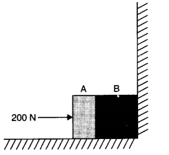
Answer: (i) When the wall exists and blocks A and B are pushing the wall, there can’t be any motion i.e., blocks are at rest. Hence,
(a) reaction of the partition = – (force applied on A) = 200 N towards left.
(b) action-reaction forces between A and B are 200 N each. A presses B towards right with an action force 200 N and B exerts a reaction force on A towards left having magnitude 200 N.
(ii) When the wall is removed, motion can take place such that net pushing force provides the acceleration to the block system. Hence, taking kinetic friction into account, we have
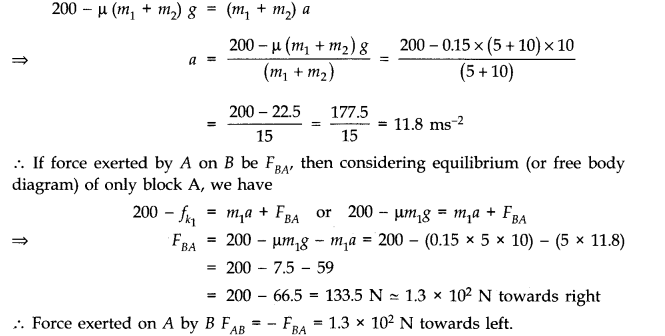
Question 5. 35. A block of mass 15 kg is placed on a long trolley. The coefficient of static friction between the block and the trolley is 0.18. The trolley accelerates from rest with 0.5 ms-1 for 20 s and then moves with uniform velocity. Discuss the motion of the block as viewed by (a) a stationary observer on the ground, (b) an observer moving with the trolley.
Answer: (a) Force experienced by block, F = ma = 15 x 0.5 = 7.5 N Force of friction,Ff= p mg = 0.18 x 15 x 10 = 27 N. i.e., force experienced by block will be less than the friction.So the block will not move. It will remain stationary w.r.t. trolley for a stationary observer on ground.
(b) The observer moving with trolley has an accelerated motion i.e., he forms non-inertial frame in which Newton’s laws of motion are not applicable. The box will be at rest relative to the observer.
Question 5. 36. The rear side of a truck is open and a box of 40 kg mass is placed 5 m away from the open end as shown in Fig. The coefficient of friction between the box and the surface below it is 0.15. On a straight road, the truck starts from rest and accelerates with 2 ms-2. At what distance from the starting point does the box fall off the truck? (Ignore the size of the box).
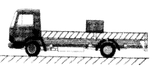
Answer:
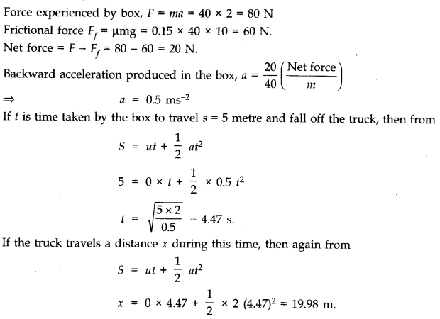
Question 5. 37. A disc revolves with a speed of 33 1/3 rpm and has a radius of 15 cm. Two coins are placed at 4 cm and 14 cm away from the centre of the record. If the coefficient of friction between the coins and record is 0.15, which of the coins will revolve with the record?
Answer: If the coin is to revolve with the record, then the force of friction must be enough to provide the necessary centripetal force.
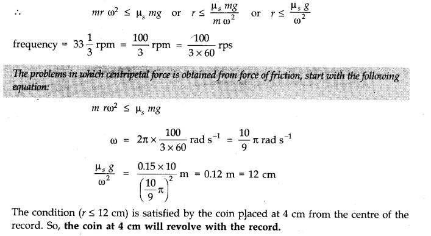
Question 5. 38. You may have seen in a circus a motorcyclist driving in vertical loops inside a ‘death well’ (a hollow spherical chamber with holes, so the spectators can watch from outside). Explain clearly why the motorcyclist does not drop down when he is at the uppermost point, with no support from below. What is the minimum speed required at the uppermost position to perform a vertical loop if the radius of the chamber is 25 m?
Answer: When the motorcyclist is at the highest point of the death-well, the normal reaction R on the motorcyclist by the ceiling of the chamber acts downwards. His weight mg also acts downwards. These two forces are balanced by the outward centrifugal force acting on him.
Here v is the speed of the motorcyclist and m is the mass of the motorcyclist (including the mass of the motor cycle). Because of the balancing of the forces, the motorcyclist does not fall down.
The minimum speed required to perform a vertical loop is given by equation (1) when R = 0.
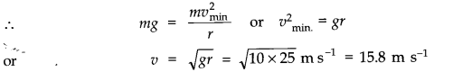
Question 5. 39. A 70 kg man stands in contact against the inner wall of a hollow cylindrical drum of radius 3 m rotating about its vertical axis with 200 rev/min. The coefficient of friction between the wall and his clothing is 0.15. What is the minimum rotational speed of the cylinder to enable the man to remain stuck to the wall (without falling) when the floor is suddenly removed?
Answer:
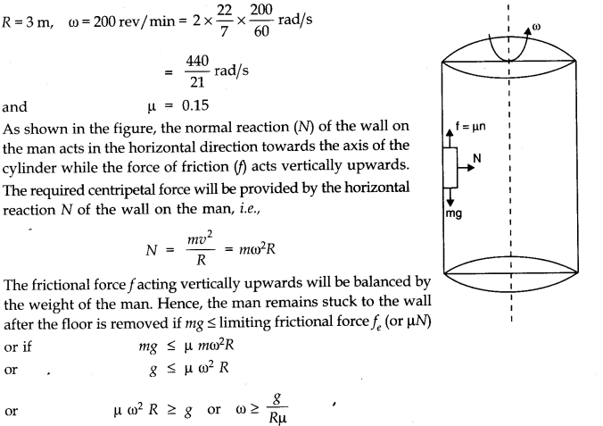
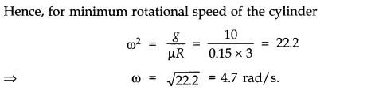
Question 5. 40.
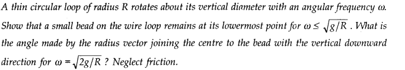
Answer:
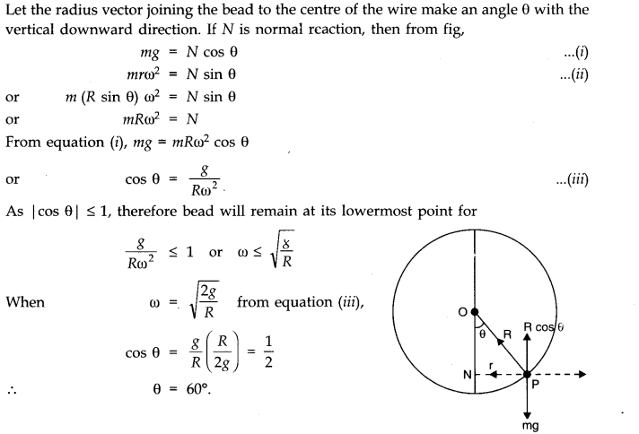
NCERT Solutions for Class 11 Physics All Chapters
- Chapter 1 Physical World
- Chapter 2 Units and Measurements
- Chapter 3 Motion in a Straight Line
- Chapter 4 Motion in a plane
- Chapter 5 Laws of motion
- Chapter 6 Work Energy and power
- Chapter 7 System of particles and Rotational Motion
- Chapter 8 Gravitation
- Chapter 9 Mechanical Properties Of Solids
- Chapter 10 Mechanical Properties Of Fluids
- Chapter 11 Thermal Properties of matter
- Chapter 12 Thermodynamics
- Chapter 13 Kinetic Theory
- Chapter 14 Oscillations
- Chapter 15 Waves
We hope the NCERT Solutions for Class 11 Physics Chapter 5 Laws of motion help you. If you have any query regarding NCERT Solutions for Class 11 Physics Chapter 5 Laws of motion, drop a comment below and we will get back to you at the earliest.